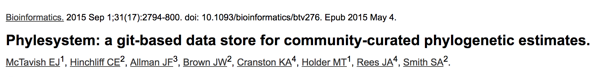
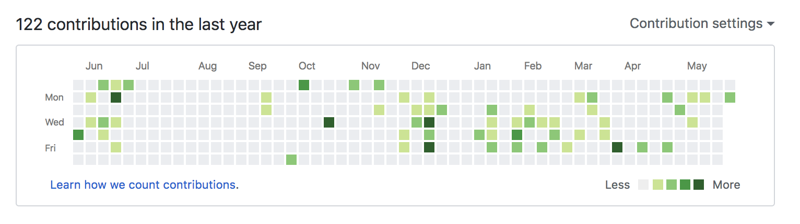

Community Curation of the Tree of Life
Karen Cranston / @kcranstn / kcranston.github.io
Engage community in building tree that is:
1. Complete
2. Online
3. Constantly updated


Curation-based synthesis
- Allow anyone to upload / edit trees
- Track provenance of changes
- Give credit for curation
- Make curated data easily available

Is it working?
- 3927 studies
- 8535 trees
- 40 curators
- 8200 commits

What's next?
- Improved curator statistics
- Notifications
- Custom tree synthesis
- UX improvements